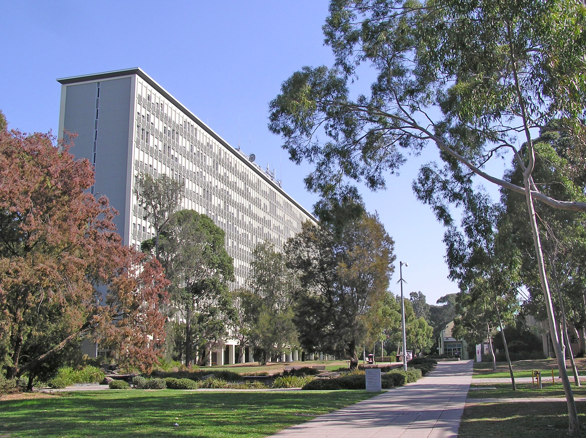
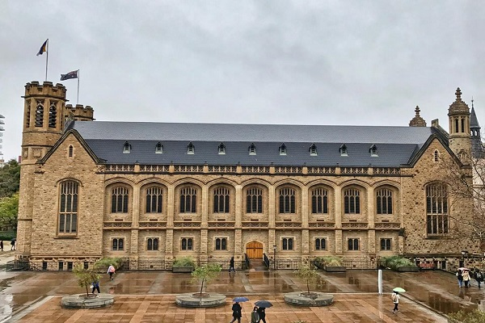
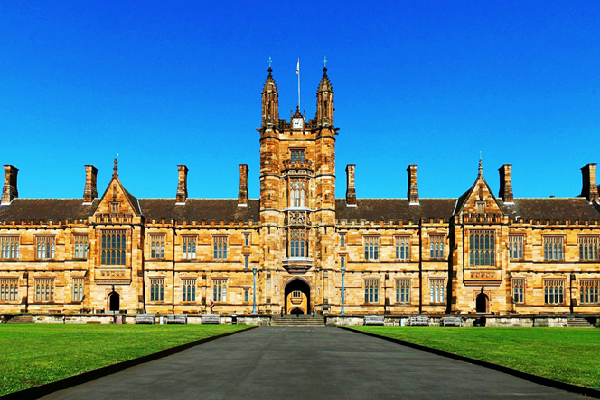

Featured Listings
-
Monash University

Monash University's Clayton Campus is one of the largest and most prominent campuses of Monash University, a leading public research university in Melbourne, Australia. The Clayton Campus, located in the suburb of Clayton, is the primary campus of Monash University and serves as a hub for teaching, research, and innovation.
Click Here for more information
The University Of Adelaide

The University of Adelaide is a prestigious public research university located in Adelaide, South Australia. It was established in 1874 and is one of Australia's oldest and most respected universities. The University of Adelaide is consistently ranked among the top universities in Australia and is internationally recognized for its academic excellence and research contributions.
Click Here for more information
University of Sydney

The University of Sydney, established in 1850, is a prestigious public research university located in Sydney, Australia. It is one of Australia's leading universities and is consistently ranked among the top universities globally. The University of Sydney is known for its academic excellence, research contributions, and vibrant campus life.
Click Here for more information